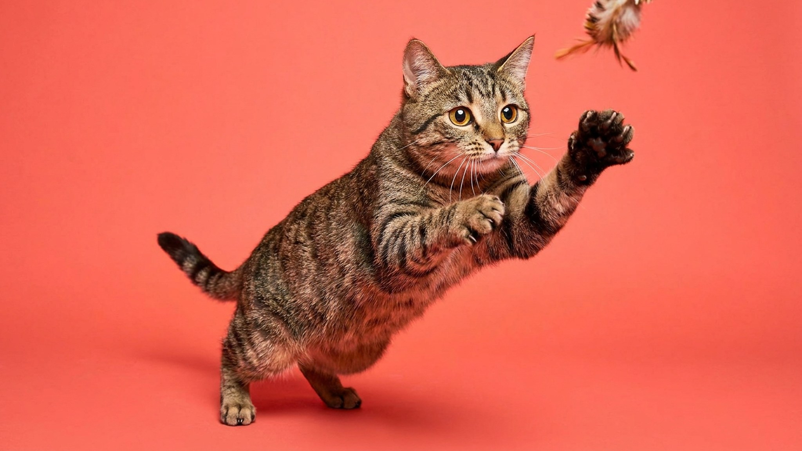

На первый взгляд — обычный полосатый кот со двора. На деле дракон ли (ли хуа) — одна из немногих естественных пород, сложившихся без селекции человека, и единственная официально признанная в самом Китае. За скромным тэбби-окрасом прячется цепкий охотничий ум и характер, к которому стоит быть готовым заранее. Разбираем, откуда порода, какой у неё нрав и что важно в уходе.
🐾 У вас дракон Ли?
AnimaLife соберёт уход под породу: к каким болезням есть склонность, что проверять по возрасту, чем кормить и когда пора к врачу. Бесплатно, прямо в мессенджере.
Собрать план ухода → Собрать в MAX →
У вас iPhone? AnimaLife есть в App Store
Дракон ли (китайское название — ли хуа мао, 狸花猫) веками жил рядом с человеком в китайских деревнях как рабочий кот-крысолов. Это природная порода: её облик сформировала не выставка, а естественный отбор. В отличие от большинства пород, у дракона ли нет «дизайнерского» прошлого — только столетия самостоятельной жизни и охоты.
За пределами Китая порода остаётся очень редкой, а её тэбби-окрас так похож на облик обычной уличной кошки, что настоящих ли хуа легко перепутать с беспородными полосатиками. Именно поэтому породу ценят за «первозданность»: это кошка, какой её сделала природа, а не мода.
Наследие крысолова определяет темперамент. Дракон ли активен, сообразителен и очень самостоятелен — это кот с задачами, а не украшение интерьера.
Порода некрупная-средняя, крепкого сложения, с характерным коричневым тикированным тэбби и выразительными зелёными глазами. Шерсть короткая и плотная, поэтому уход простой.
🐾 Ваш питомец — дракон Ли?
Заведите профиль в AnimaLife: приложение запомнит породу, возраст и вес и будет подсказывать по уходу именно для неё. Вопросы AI-ветеринару — круглосуточно и бесплатно.
Завести профиль → Завести в MAX →
У вас iPhone? AnimaLife есть в App Store
🐾 Понравился разбор?
Подпишитесь на канал — каждый день разбираем по одному тревожному симптому у кошек и собак: что в пределах нормы, а когда пора к врачу. Подпишитесь, чтобы не пропустить разбор, который может спасти здоровье вашего питомца.
Эта кошка — для тех, кто ценит активного, думающего компаньона и готов давать ему игру и пространство для «охоты». Дракон ли отлично подойдёт семье, которая проводит с питомцем время, играет и обустраивает вертикальные маршруты по квартире.
А вот тем, кто мечтает о постоянно спящем коте на коленях, порода подойдёт хуже: ли хуа слишком деятелен, чтобы весь день лежать. Дайте ему занятость — и получите умного, преданного и на удивление ненавязчивого друга.
Как природная порода дракон ли обычно крепок и не тащит за собой букет наследственных проблем «дизайнерских» линий. Но это не отменяет базового: сбалансированный рацион, контроль веса и плановые визиты к ветеринару нужны ему так же, как любой кошке.
Материал носит информационный характер и не заменяет очную консультацию ветеринара.